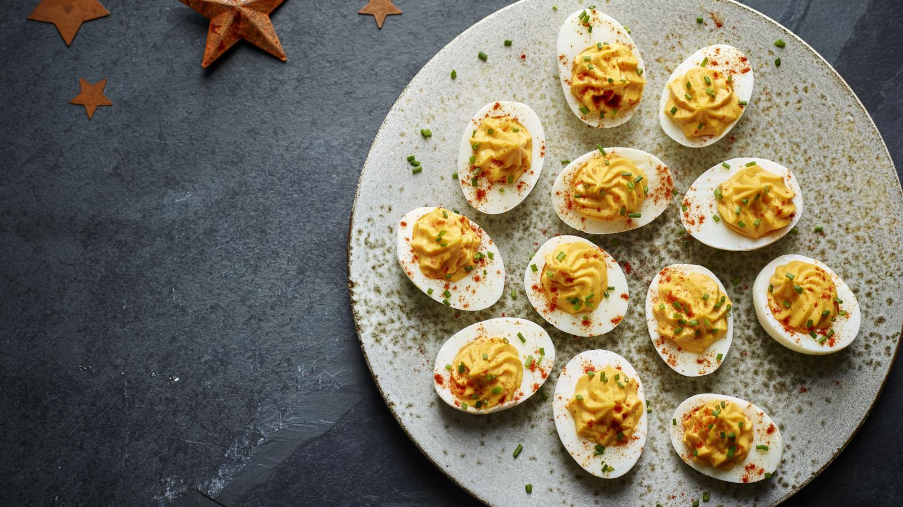

Devilled eggs

While devilled eggs had their moment in the UK – at about the same time the hostess trolley held sway – they are an essential part of the American entertaining tradition. There’s not much that can get me squeezing a fancy-nozzled piping bag, but this recipe – even if mine diverges somewhat – compelled me to. Although they are a bit fiddly to make, they’re not difficult, and they are always a major hit. And I’m talking about genuine enjoyment not ironic amusement. As many as I make, I never have a single one left over.
Ingredients
- 12 large free-range eggs, at room temperature
- 4 tbsp mayonnaise
- 1–2 tsp English mustard
- 1 tsp sea salt flakes
- few drops Tabasco
- 2 tbsp extra virgin olive oil
- 2–3 tbsp water from a freshly boiled kettle
- 2 tsp finely chopped chives
Method
- Bring some water to the boil in a large saucepan and, once it’s boiling, add the eggs, one by one, into the pan and bring back to the boil. Boil for 1 minute, then turn the heat off and leave the eggs to stand in the pan for 12 minutes.
- While you’re waiting for the eggs to cook, fill a large bowl with very cold water, and throw in a handful of ice cubes if you have them. As soon as the eggs have had their 12 minutes, spoon them into the cold water and leave for 15 minutes – no longer – before peeling patiently and carefully.
- Halve the eggs lengthways and gently prise the yolk out of each half and pop them into a mixing bowl. Place the neatest looking 18 halved whites on a plate or two.
- Add the mayonnaise, a teaspoon of English mustard, the salt and paprika to the egg yolks, and shake a few drops of Tabasco on top. Stir and mash with a fork, then blend with a stick blender or in a food processor. Add the oil and blend again until smooth. It will be very thick. Check for seasoning and also taste to see if you want this hotter. I generally go up to 2 teaspoons of mustard and quite a bit more Tabasco, but it’s best to proceed slowly. Now, by hand, stir in as much of the water as you need to help form a piping consistency
- Spoon the golden mixture into a piping bag with a star icing nozzle, making sure it is densely packed at the bottom of the bag. Then pipe away, filling the hollowed-out whites with golden rosettes. Or you can mound the yolk mixture using a pair of teaspoons. Sprinkle with paprika and chopped chives and serve with a flourish.
Home